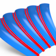

CAM Plan
The CAM Plan contains functions that simplify the programming process. These range from analyzing the part to displaying and repairing possible surface defects to the automatic generation of features and geometries required for programming. In addition, the CAM plan provides a platform for advanced technologies and more interactivity in programming. The CAM Plan is a dialog page in the hyperMILL browser, divided into a tree structure (in the upper part) and the Selections and Tasks areas (in the lower part).
Activate the CAM Plan in the hyperMILL settings (CAM menu → → → → ) and then select a predefined Project template. Depending on which template has been selected, the CAM Plan contains different functions and tasks.
Tip
Use the /  icons in the tree structure to control the visibility of
elements.
icons in the tree structure to control the visibility of
elements.
Note
To avoid possible issues during programming, all the tasks offered should be carried out.
General (complementary): Use the / icons
to control the visibility of all geometries not selected as a part.
Part: Select the surfaces of the part to be programmed without unnecessary additional surfaces or capping of holes. Then go through the tasks step by step to fully prepare the part.
Remove duplicate surfaces: Check the part for duplicate surfaces and remove them if applicable.
Check surfaces: Check the selectedsur surfaces for possible defects that could cause problems in the subsequent programming process. If a damaged surface is found, the first step is to attempt to repair the surface automatically. In the next step, a new layer is created, the corresponding surface is moved there and removed from the selection made in Part. Ensure that this or any newly constructed surface is included in the part selection again.
hyperMILL converter check: Check whether the selected part can be converted by the converter.
Check for gaps: Check whether there are gaps between the selected surfaces. If gaps are found, a layer is automatically created upon which the gaps are displayed using curves and points. Decide whether the gaps should be corrected or not. Skip this task by deactivating the corresponding option at Computable task.
Orientate surfaces: Check whether the selected surfaces are correctly orientated. After starting the task, the corresponding CAD function opens automatically and aligns the surfaces. Manually align any surfaces that are not aligned correctly. The corresponding surfaces are displayed in a dark color.
Hole recognition / add capping: This task starts the Feature mapping based on the selection made for the Part. Capping surfaces are automatically created for the recognized holes, a new layer is created and the surfaces are moved there. Skip this task by deactivating the corresponding option at Computable task.
Create milling area(s): The milling areas required for programming are created automatically. One or two milling areas are created depending on the selected project template. If the "with holes" template has been selected, two milling areas are created: A milling area that contains the part and the holes, and a milling area that contains no holes but the capping. If a template "without holes" has been selected, only one milling area is created.
High precision milling: Select all surfaces that are relevant as product surfaces for 3D finishing and generate topology information from them. The generated curves represent the exact topology information of the product surfaces. They are saved internally and used for the point distribution of 3D finishing.
Create topology information
|

|
Generate topology curves for 3D finishing. → → → |
Select
Shapes: Select entities  .
.
Invert orientation: Invert the orientation of the faces of the shape.
Mapping
Select the continuities to be analyzed: Gap  , Sharp
, Sharp  , Curvature
, Curvature  , Tangential
, Tangential  . The number of curves found is displayed. The results are marked with the colors displayed in the dialog. The colors cannot be changed.
. The number of curves found is displayed. The results are marked with the colors displayed in the dialog. The colors cannot be changed.
Sharp edges
Search for all, only convex or only concave edges.
Reference values
Tolerance: Enter a value for the permissible deviation in the position for the size of the gap.
Assign tolerance: Optionally assign the tolerance.
Angular tolerance: Enter a value for the maximum permissible deviation of the tangency of the transition.
Curvature difference (%): Enter a value for the maximum permissible deviation of the curvature of the transition.
More options
Internal continuities: Visualize continuities within NURBS surfaces  . Both internal C0 and C1 continuities can thus be identified directly. Milling operations can be better
prepared and validated.
. Both internal C0 and C1 continuities can thus be identified directly. Milling operations can be better
prepared and validated.
Deburring: Select all surfaces as edge surfaces that are relevant for deburring the component and create the edge geometries for deburring. These curves are saved internally and used for the toolpath calculation of the 5X Deburring and 5X Hole Deburring cycles.
Create edge geometry
 |
Determine contours for deburring. → → → |
Select
Shapes: Select entities .
Mapping
Select the continuities to be analyzed: Gap , Sharp
The number of curves found is displayed. The results are marked with the colors displayed in the dialog. The colors cannot be changed.
Reference values
Tolerance: Enter a value for the permissible deviation in the position for the size of the gap.
Assign tolerance: Optionally assign the tolerance.
Max Deburring Angle: Enter the maximum angle between two surfaces for which an edge to be deburred is to be detected. To find all edges to be deburred, enter 180 degrees.
Rest material
Rest material: Select all surfaces that are relevant as rest material surfaces for machining the part and generate the rest material data. This data is saved internally and used for the toolpath calculation of the cycles 3D Automatic Rest Machining and 5X Rest Machining.
|
Create rest material data. → → → |
To calculate the rest material data, select a frame as Direction. The calculation is based on the Z direction of the selected frame.
Create a reference tool for calculating the rest material data via the context menu New of the Ballmill list entry. Enter a value for the tool diameter to be used for calculating the rest material data in the red input field under → Any number of tool diameters can be defined.
Subsequently select the calculated rest material data in the 3D Automatic Rest Machining and 5X Rest Machining cycles on the Tool dialog page as → → .